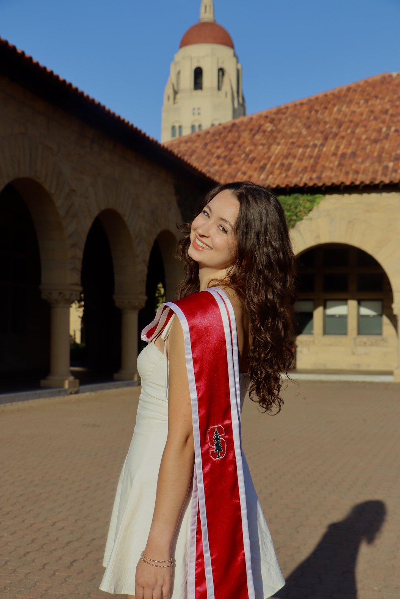

In 2025, I graduated from Stanford University with a B.A. in Data Science. While at Stanford, I conducted undergraduate research in biomedical data science.
Through this work, I developed a strong interest in using data to improve our understanding of disease, from diagnostics, to treatments and patient outcomes.
My interests include precision medicine, genomics, and complex diseases, especially cancer and neurodegenerative disorders.
I’m particularly drawn to work that combines rigorous statistical analysis and computational innovation with real-world impact in healthcare and medicine.
I am currently seeking opportunities where I can contribute to biomedical research while continuing to grow as a data scientist and researcher.
Outside of work, you can find me going for a hike or a trail run in the Arizona desert 🏜️,
practicing yoga 🧘🏻♀️, lifting weights 🏋🏻♀️, or tending to my (steadily growing) collection of houseplants 🪴.